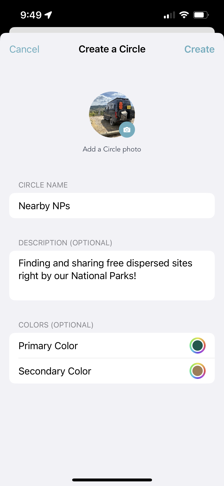
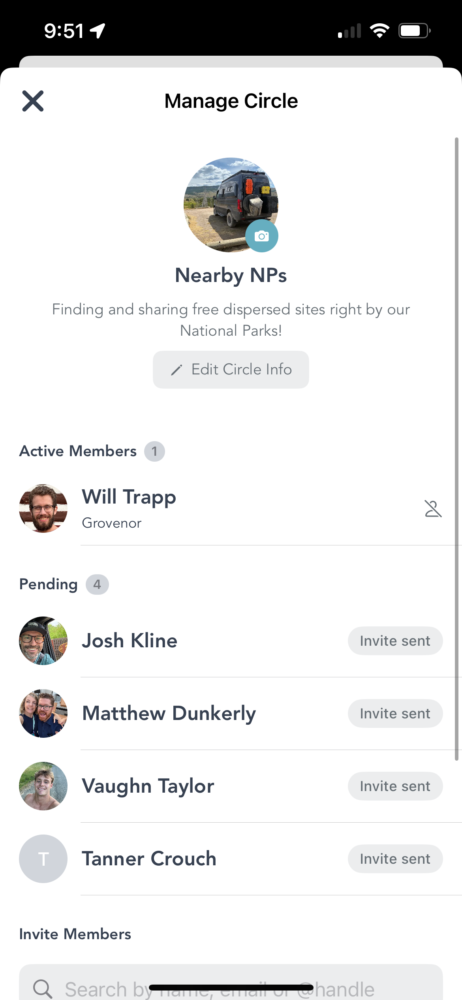
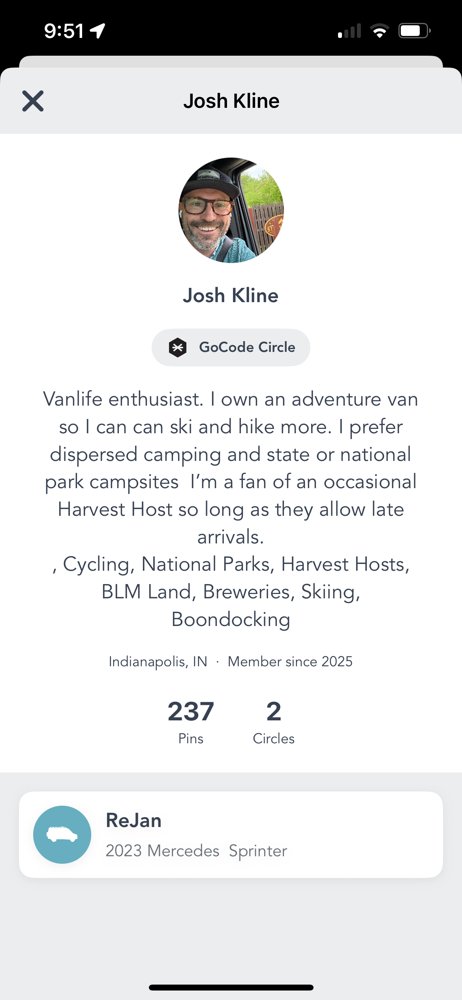

Vanlife is better when you share it with the right people. The hidden dispersed site that requires local knowledge. The sketchy mountain pass someone in your rig-specific group flagged last week. The perfect beach pullout your friends found and dropped a pin on before the crowd showed up. That information doesn't need to go to everyone — it needs to go to your people.
We've been building toward this for a while. And now it's here: Club Circles on Grover.
From One Circle to Many
When Grover launched, every user was part of one Home Circle. It was the community — everyone sharing with everyone. That was the right start. It got pins flowing, got conversations going, and showed us just how much people want to share what they find on the road.
Then we created the Grover Circle — a universal space for the whole community. For a few months, that was the world. One big shared map where every pin landed in one place. It worked. But we kept hearing the same thing: "I want to share this with my crew, not the whole internet."
So we built that. Club Circles let you create or join as many Circles as you want — each one its own little community with its own focus, its own people, and its own pins. Your Grover Circle is still there. Your Home Circle is still there. But now you can stack as many Club Circles on top as you'd like.
Create Your Circle
Creating a Circle takes about thirty seconds. Tap the Circles tab. At the top, you'll see a scrollable row of all your current Circles. The first chip in that row says + Join. Tap it.
From there, you can browse public Circles to join — or create your own. To build a new one, you'll pick a name, upload a photo, write a description, and choose your colors. That's the whole form.

The Create a Circle form — name, photo, description, and colors. Done in under a minute.
The name and description are how people will discover you if you make the Circle public. The colors are just for you — they theme your Circle's look across the app. Pick something that fits the vibe.
Theme ideas that work well: a rig-specific crew (Transit owners, Sprinter nerds, Class B crew), a region you explore together (desert Southwest, Pacific Coast, Great Lakes), an activity focus (skiing, climbing, dispersed camping), or just the people you always want to know about first.
The Grovenor
Every Circle has one. The person who created it is the Grovenor — yes, that's a real thing we named on purpose, and yes, we're proud of it.

The Manage Circle screen — Active Members, pending invites, and the search bar to invite new people.
The Grovenor has a few specific powers. They can invite new members by name, handle, or email. They can accept (or decline) requests from people who want to join. And if someone's being a bad actor in the group — not sharing kindly, not contributing well — the Grovenor can remove them.
The Manage Circle screen shows you everything at once: active members, pending invites, pending requests. You can search for anyone on Grover to send an invite directly. If they're already in your network, they'll show up immediately.
A note on community: Circles work best when they're built on trust. Invite people who'll contribute, share generously, and treat shared spots with respect. In all things — on the road and on Grover — be kind.
Find Your People
Club Circles are only as good as the people in them. So alongside Circles, we've launched public profiles — a way to find out who you're sharing with before you invite them, and a way for friends to find you.

A public Grover profile — bio, location, stats, Circle affiliations, and rig details all in one place.
Your public profile shows your handle, your bio, where you're based, how long you've been on Grover, how many pins you've contributed, how many Circles you're part of, and your rig. It's a quick read that tells someone whether you're the kind of vanlife nerd they want in their Circle.
Tap anyone's avatar in a feed, a member list, or a search result to pull up their profile. If they look like your kind of people, invite them in.
To make sure your own profile is ready: sharpen up your avatar, set your handle, and make sure your rig specs and stats reflect everything you've been up to. Your profile is how the community sees you — make it count.
Grover has always been about sharing the road. Club Circles just give you the tools to share it with exactly the right people, exactly when it matters. Go create yours.
Ready to Build Your Circle?
Download Grover, tap the Circles tab, and create the group you've been missing. Your people are already out there — time to find them.